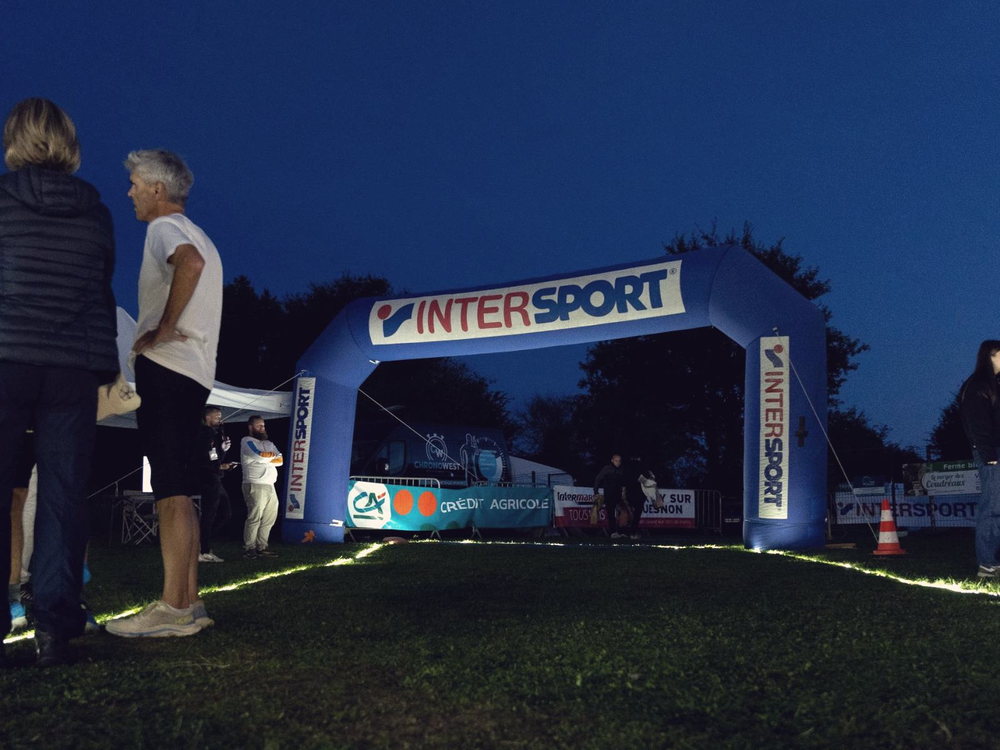
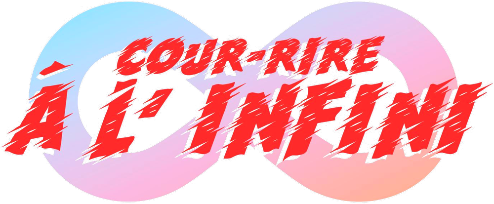
30 heures en 2026. Une boucle taillée pour les records. Et en 2027 ?La deuxième édition de notre backyard, entre Rennes et Saint-Malo, aura lieu les 9 et 10 octobre 2027, autour d'un sublime étang breton, avec moins de vingt mètres de dénivelé sur la boucle. Mais la backyard n'est que le fil conducteur : trail, courses nature, randonnée et courses enfants remplissent tout le week-end — des 500 mètres du premier dossard à l'ultra de plus de 200 kilomètres.
Programme complet dévoilé en février 2027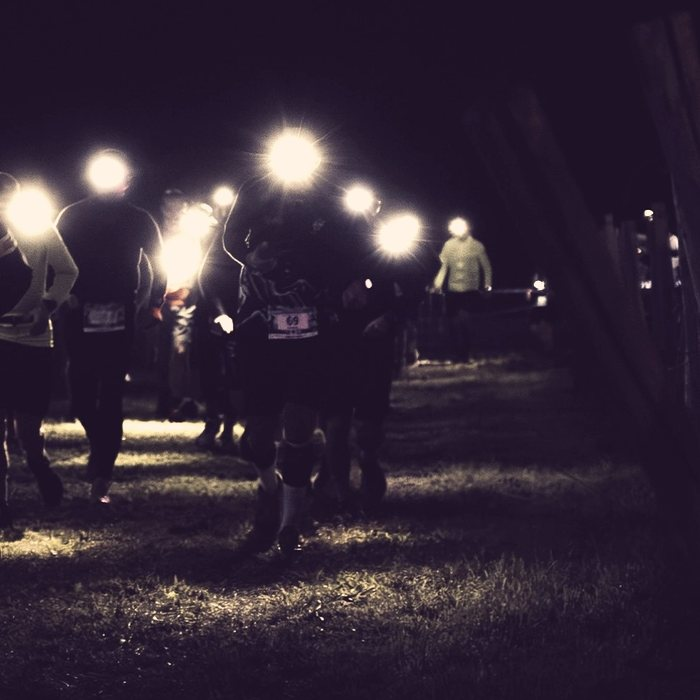
Départ dans
Une boucle taillée
pour les records
Le programme peut encore bouger. Elle, non. 6,706 kilomètres, la distance réglementaire d'une backyard, à boucler en une heure, autour d'un étang breton. Et surtout : moins de vingt mètres de dénivelé sur le tour complet. Si vous visez un record de boucles, vous venez de trouver le terrain.
C'est une vraie boucle : on descend de la salle vers l'étang, on en fait le tour à plat, et on remonte les mêmes vingt mètres pour revenir au départ. Un chemin de halage propre, presque sans racine, puis un single qui serpente entre la forêt et l'eau : varié, exigeant dans le rythme, jamais dans la pente. Et le lever comme le coucher du soleil sur l'étang, aux premières loges.
par heure
même boucle
pas est éliminé
debout gagne
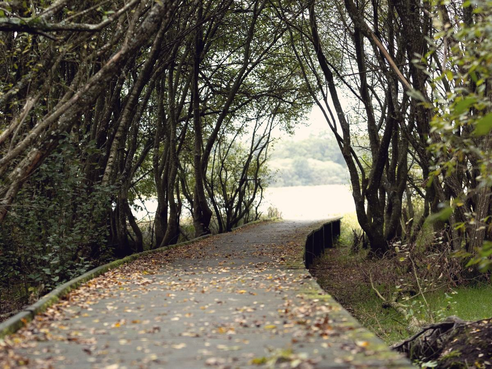
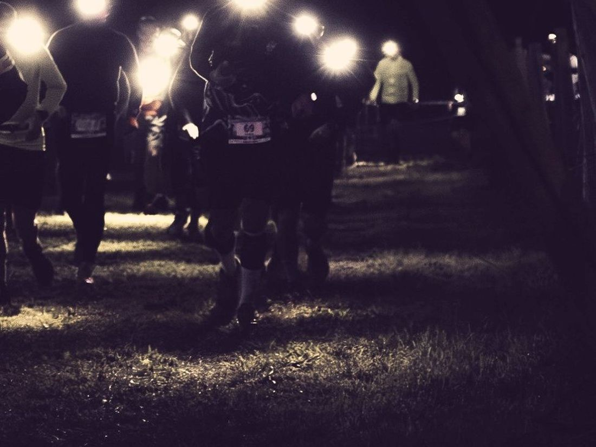
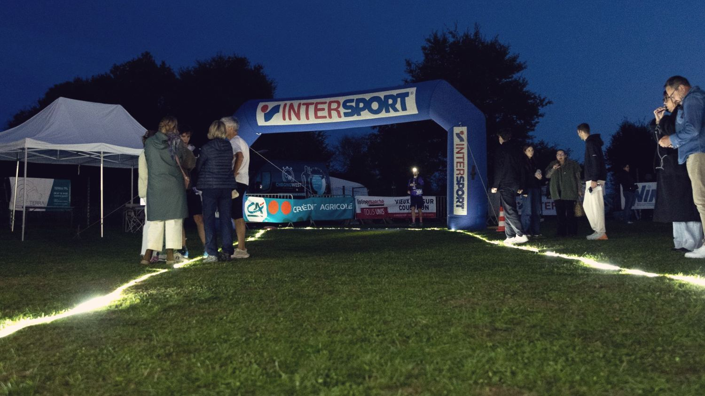
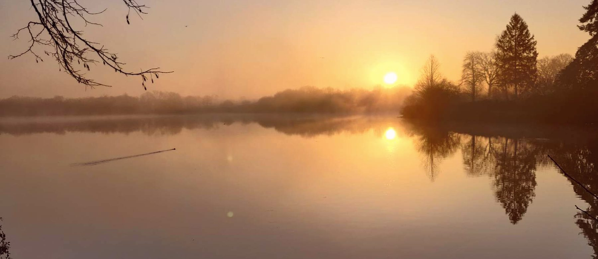
Et vous serez
encore là.
Un camp qui
ne ferme jamais
La boucle part et revient devant la salle. Vous repassez devant le camp de base à chaque tour : le sac, l'assiette, le lit de camp sont là, au chaud, à quelques mètres de la ligne. C'est ce qui fait la différence à trois heures du matin.
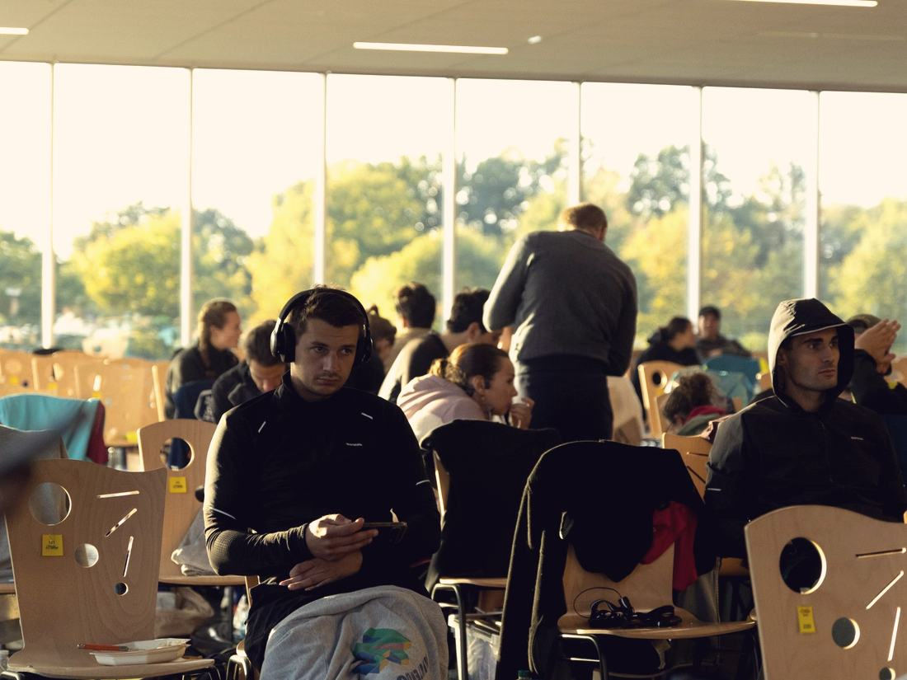
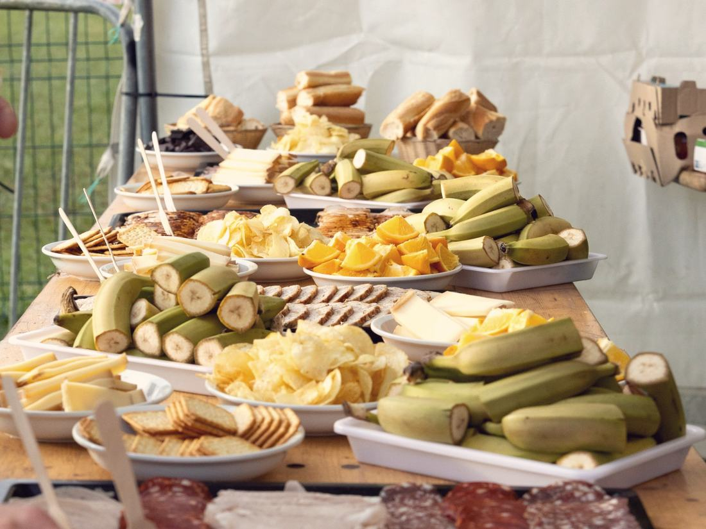
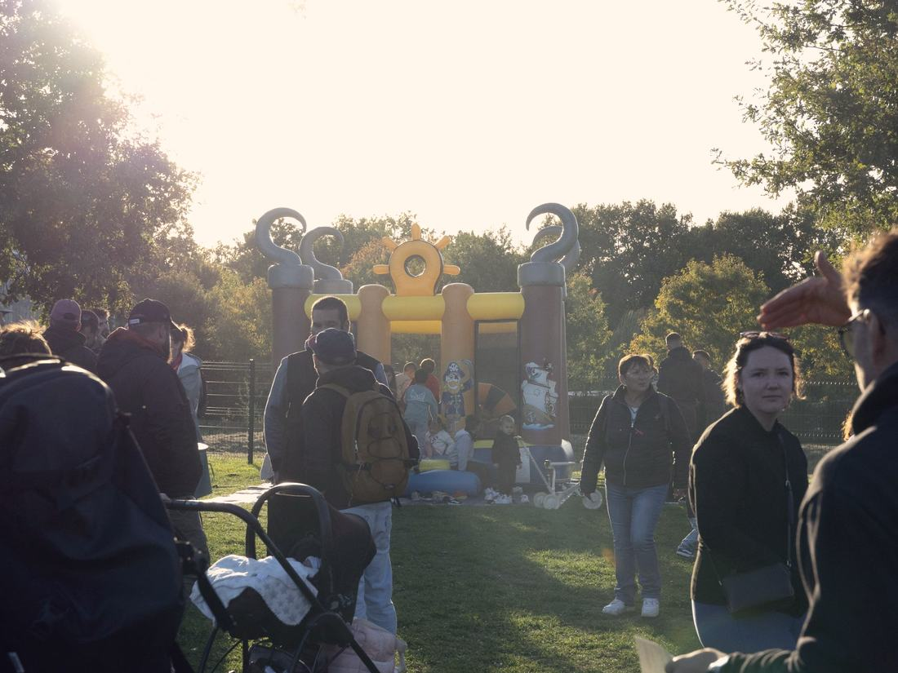
Vous ne courrez
pas n'importe où.
Ce qu'il y aura
au programme
Deux finishers à 30 heures et 201 kilomètres en 2026 : certains en redemandent déjà. Alors on retravaille les formats, on améliore encore l'événement, et on prépare peut-être quelques surprises ;) Des tout-petits aux ultra-traileurs, tout partira et tout arrivera au même endroit. Serez-vous prêt en octobre 2027 ?
On commence par les noms — enfin, presque tous.
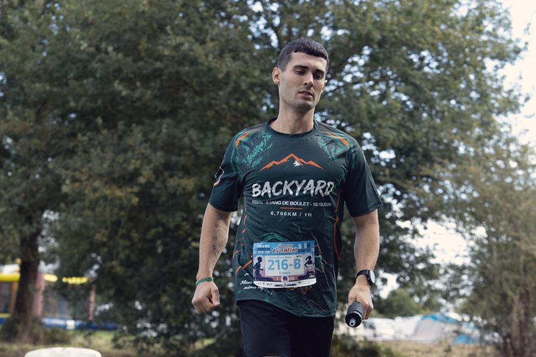
Elle n'est pas la seule course.
Tout ne sera pas
dévoilé d'un coup
On a pris une habitude : annoncer les choses quand elles sont sûres, jamais avant. Voilà donc dans quel ordre vous allez tout savoir.
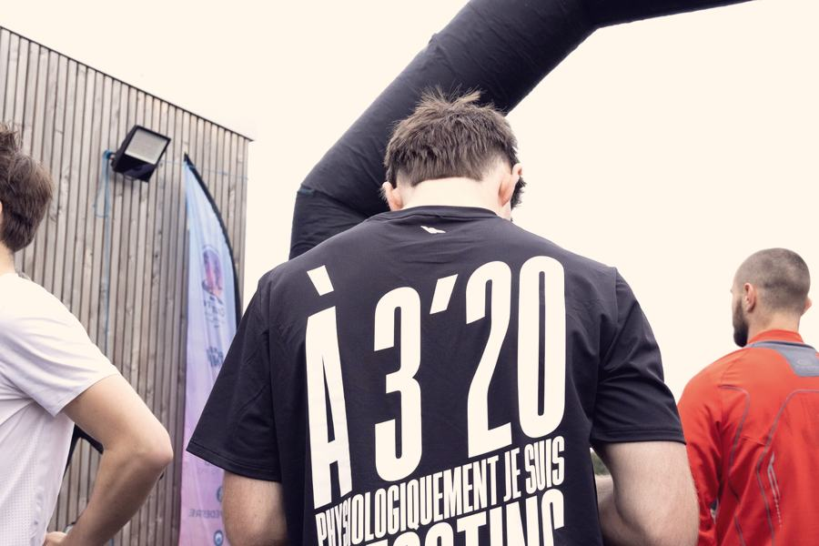
Pour l'instant.
et le lieu 9 et 10 octobre 2027, étang de Boulet à Feins. Une backyard sur un tracé officiel de 6,706 km, et plusieurs formats de courses sur tout le week-end. Ça, c'est gravé.
et les courses Combien de courses, leurs noms, leurs distances approximatives et les horaires de départ.
et les tracés Profils, road books, ravitaillements, infos coureurs, plan de la base de vie — le tout en téléchargement.
des dossards La date d'ouverture reste secrète. Les inscrits à l'alerte sont prévenus en premier, avant l'annonce publique.
Chaque annonce passera d'abord par Instagram. Suivez-nous pour ne rien manquer.
Soyez prévenu
avant tout le monde
En 2026, les dossards de la backyard sont partis les premiers. Un mail d'une ligne suffit : on vous prévient dès l'ouverture des inscriptions, avant l'annonce publique. Et si vous préférez, tout passe aussi par Instagram.
On répond très vite, promis10 & 11 octobre 2026
Pour une première, la salle de la Bijouterie n'a pas désempli pendant trente heures. Voilà ce que ça a donné.
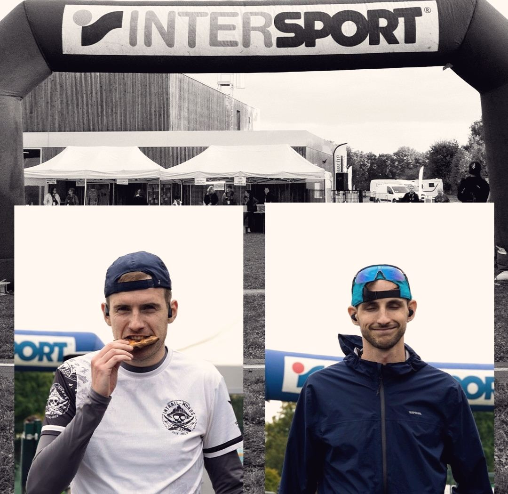
30 boucles.
201 km.
30 heures.
Trente départs à l'heure pile, une nuit entière dehors, et toujours sur la ligne au matin. Cyprien Coutand Reeves et Alexis Rabot sont allés au bout des trente heures de la première édition, sur un tracé où rien ne freine. Un record de la maison — qui ne demande qu'à tomber en 2027.
- 1Cyprien Coutand Reeves30 boucles · 201 km
- 2Alexis Rabot30 boucles · 201 km
- 3Xavier Fournier26 boucles · 174,2 km
- 1Yann Menant51'06 · Asphalte Guipel
- 2Florian Hubert55'53 · AL Saint-Marc-le-Blanc
- 3William Leduby56'05 · Asphalte Guipel
- 1Mathilde Lemonnier1h05'16 · Combourg Athlétisme
- 2Maeva Chevreul1h13'21
- 3Amélie Patinote1h15'16
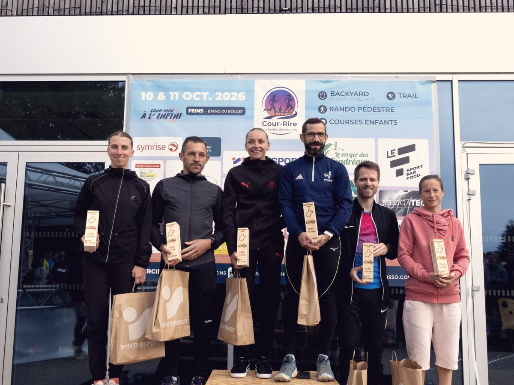
Photographies © nathan.l.photographe
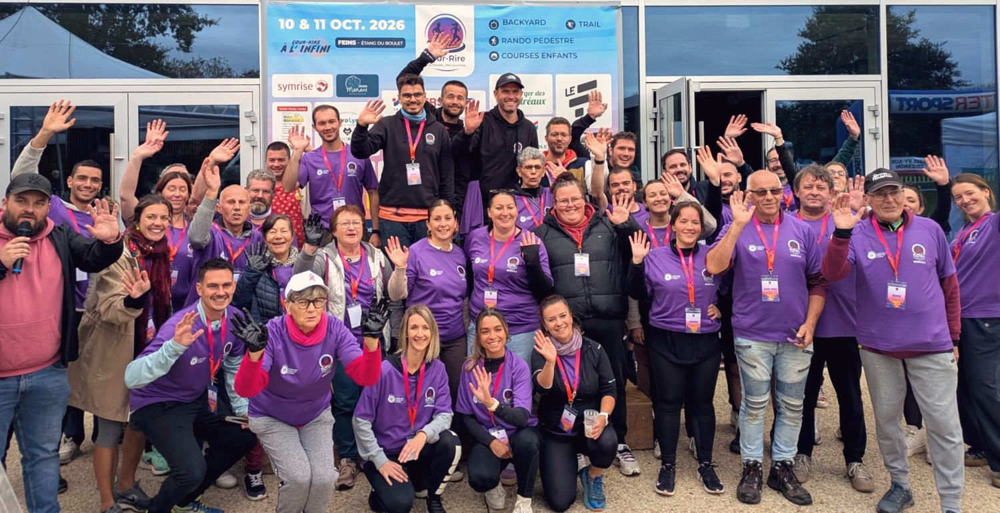
Une association
de Feins
Cour-Rire est née de l'envie de mettre en mouvement les grands et les petits, et de proposer un événement sportif qualitatif, ambitieux et ouvert à tous.
Derrière la course : une équipe de plus de 70 bénévoles incroyables, qui montent le site le vendredi et le démontent le dimanche soir. L'ambition est simple : faire de Cour-Rire le rendez-vous backyard, trail et sportif incontournable de l'Ouest.
Courir sert aussi
à autre chose
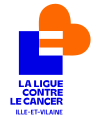
1 € par dossardUne donation caritative à la Ligue contre le cancer, sur chaque inscription et chaque épreuve. C'était l'engagement de 2026, il est reconduit.
Reversée à l'Association des Parents d'Élèves de Feins : des sorties, du matériel et des projets en plus pour les élèves de l'école de Feins. #local
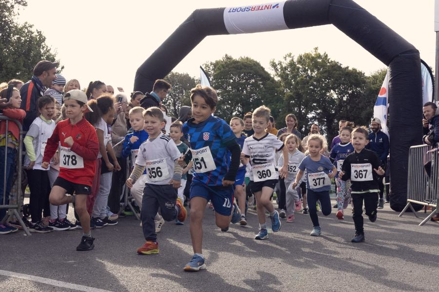
dès 500 mètres
Il faut plus de 70 personnes
pour tenir la nuit entière
Ravitaillement, parking, buvette, restauration, remise des dossards, logistique, installation du site… Deux heures ou tout le week-end : on prend. Et l'ambiance est incroyable 😉
Écrivez-nous : je veux aider ✉︎ asso.cour.rire@gmail.com · on vous répond très vite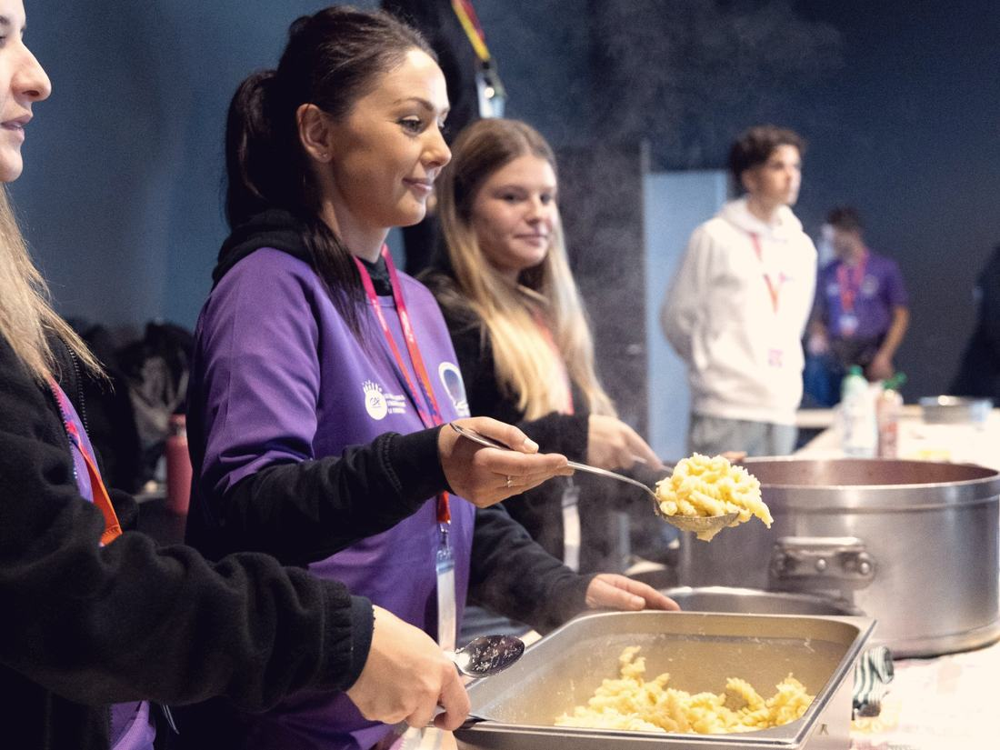
Nos partenaires
Une trentaine d'entreprises et d'institutions du bassin rennais ont soutenu la première édition, financièrement ou en matériel. Merci à elles.
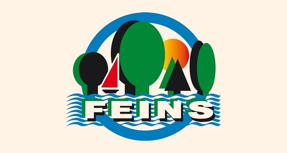
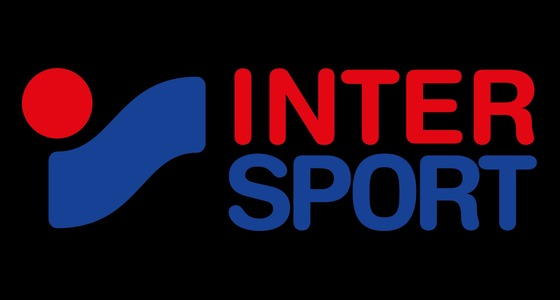
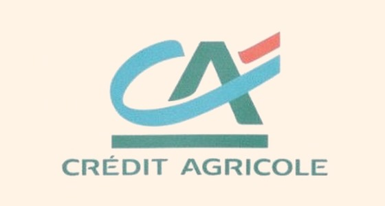
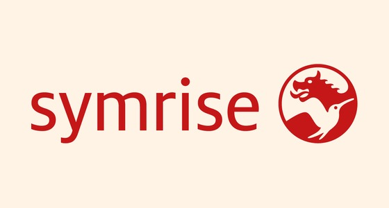
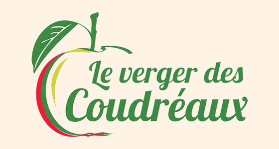
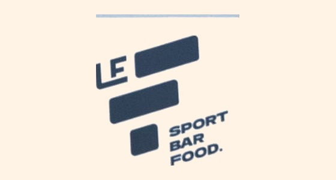
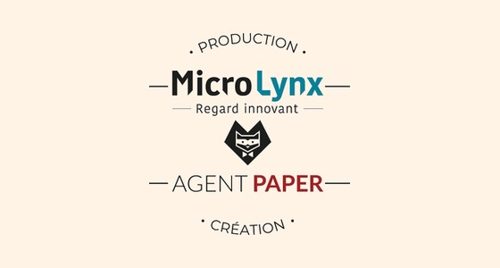
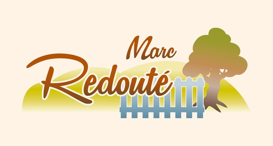
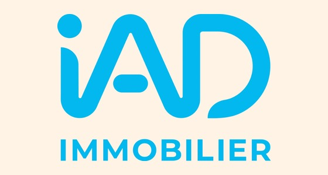
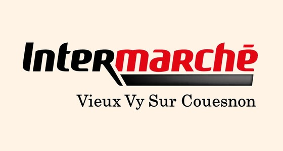
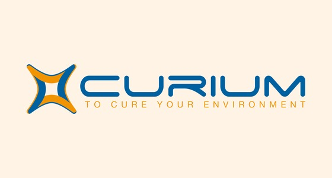
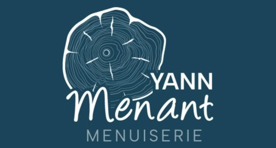
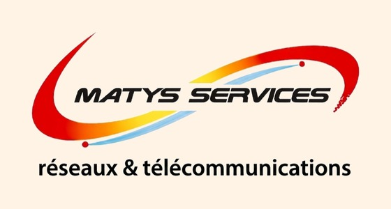
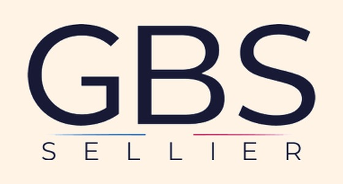
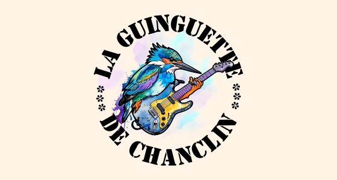
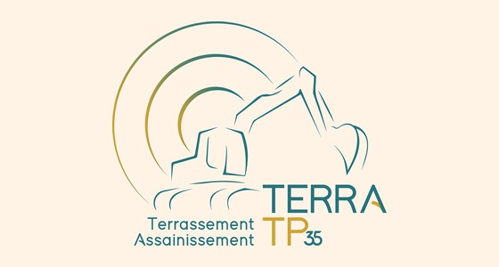
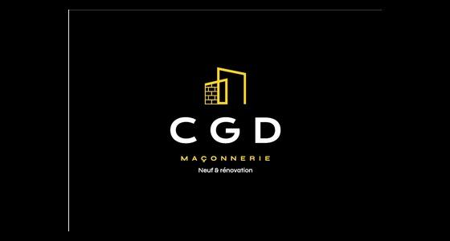
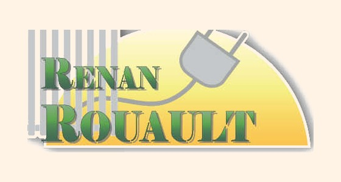
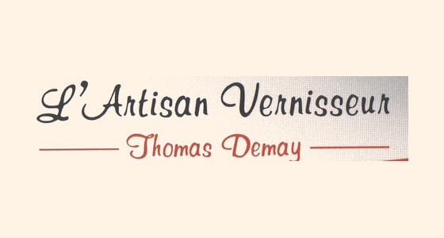
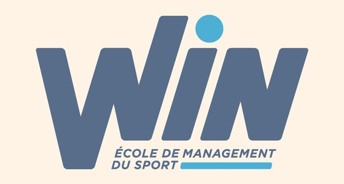
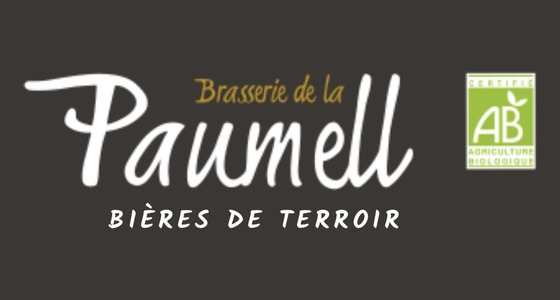
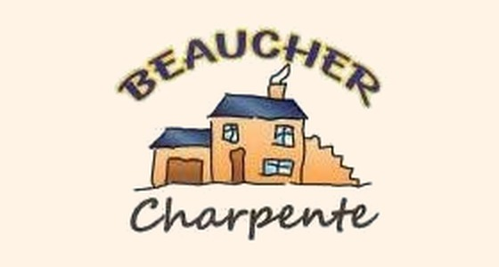
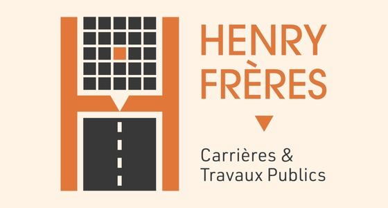
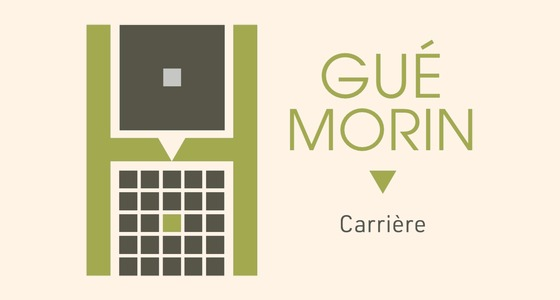
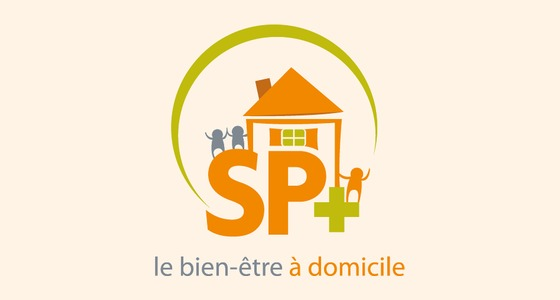
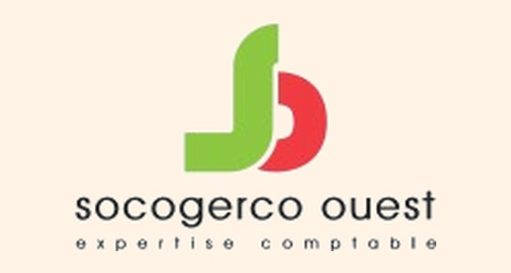
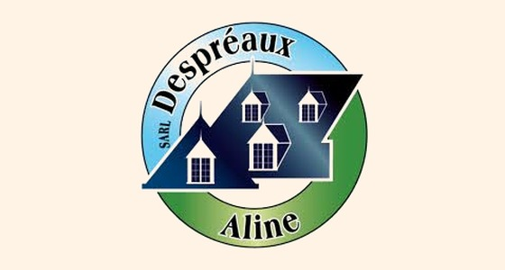
Tout savoir sur
la backyard
Qu'est-ce qu'une backyard ?
Une backyard ultra est une course d'endurance à élimination. Tous les coureurs s'élancent ensemble sur la même boucle, au début de chaque heure. Celui qui n'a pas bouclé dans l'heure, ou qui ne repart pas au signal suivant, est éliminé. Il n'y a pas de distance annoncée à l'avance : la course s'arrête quand il ne reste qu'un coureur capable de repartir. Un seul finisher, tous les autres abandonnent. Le classement se fait au nombre de boucles.
Quand et où a lieu l'édition 2027 ?
Les 9 et 10 octobre 2027, à l'étang de Boulet, à Feins (35440), en Ille-et-Vilaine — entre Rennes et Saint-Malo, à une trentaine de kilomètres au nord de Rennes. Départ le samedi matin, fin le dimanche. Tout se passe sur un seul site : départ, arrivée, base de vie, camping et restauration.
Quelle est la distance de la boucle ?
La boucle officielle fait 6,706 km, soit la distance réglementaire d'une backyard (4,167 miles), parcourue en une heure. Elle fait le tour de l'étang de Boulet à 90 % et compte moins de 20 mètres de dénivelé : c'est un des terrains les plus roulants de la région, taillé pour aller chercher un record personnel.
Faut-il être ultra-traileur pour venir ?
Non. Le week-end réunit plusieurs formats, de 500 mètres pour la première course enfant jusqu'à l'ultra de plus de 200 kilomètres, en passant par un trail et une randonnée sans chrono. Le programme complet est dévoilé en février 2027.
Comment s'inscrire ?
Les inscriptions se feront en ligne sur Klikego. La date d'ouverture n'est pas encore annoncée. Écrivez à asso.cour.rire@gmail.com pour être prévenu en premier, avant l'annonce publique : en 2026, les dossards de la backyard sont partis les premiers.
Peut-on venir en spectateur ?
Oui, et c'est gratuit. En 2026, près de 1 500 visiteurs sont passés sur le week-end. Buvette, restauration, animations et un village au bord de l'eau : la boucle passe devant la base de vie à chaque tour, c'est l'un des rares formats où l'on voit les coureurs toutes les heures.